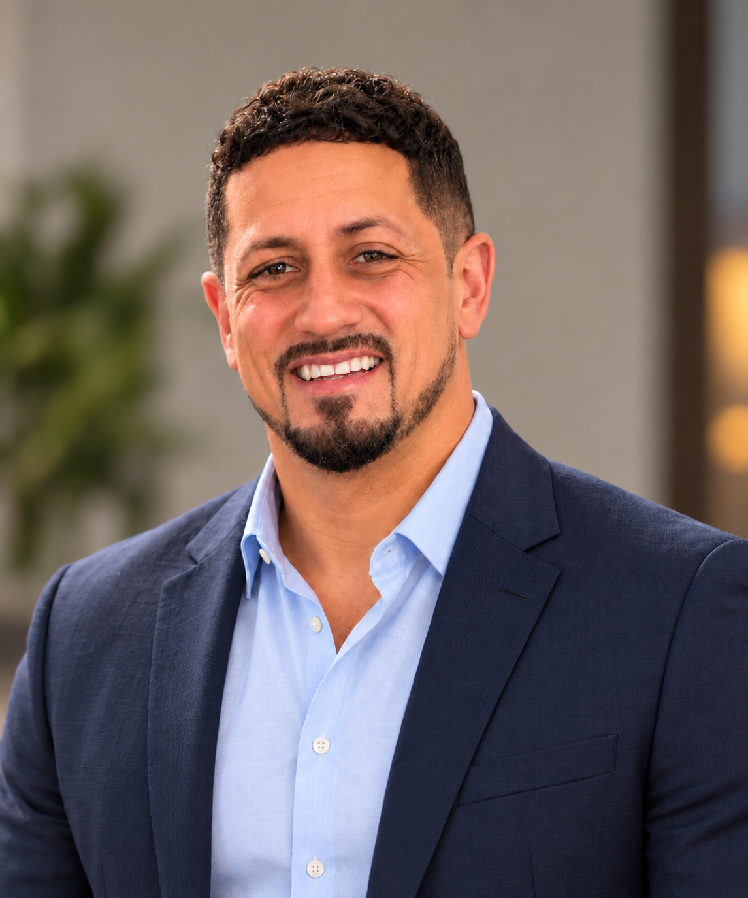

About us / The people behind Just412
A LIFE REBUILT.
BY GOD’S GRACE.
I’m Justin Drish. A husband. A father of three. And a man whose story is personal.

01 / Meet Justin
HUSBAND.
FATHER.
STILL BECOMING.
I’m Justin Drish, a husband and father of three in the Greater Pittsburgh region. Faith, family, and my own story of recovery are part of who I am.
My background spans addiction recovery, counseling, ministry, and organizational leadership. I serve as Executive Director of Regional Operations & Strategy with Naaman Network and Pennsylvania Adult & Teen Challenge. My earlier work includes substance abuse counseling, program management, and student and counseling ministry at Reclamation Church in Monroeville.
I earned a Bachelor of Science in Theology/Counseling and an Associate of Arts in Substance Abuse/Addiction Counseling from Clarks Summit University.
More about my professional work02 / My story
OUT OF ADDICTION.
INTO A NEW CHAPTER.
years ago,
my story took a different turn.
Fifteen years ago, I came out of addiction. Only by the grace of God, I’ve become a husband and a father of three children.
When I talk about grace, I’m talking about my own life. My story of recovery and the family I have today are personal parts of what that word means to me.
That’s what sits behind “Grind by Grace.” Talent and hustle matter, and last but certainly not least comes the grace of God. Just412 is a place to share that story through merchandise and creative work.
“But by the grace of God I am what I am.”
1 Corinthians 15:10
03 / Our family
A FAMILY.
A NEW CHAPTER.
Today, I’m a husband and a father of three children. My wife and our children are part of the personal story behind Just412.
Coming out of addiction fifteen years ago and becoming a husband and father is a story I tell with gratitude to God. Our family is part of that chapter, and part of why the word “grace” means so much to me.
The people behind the purpose
A HUSBAND.
A FATHER
OF THREE.
Only by the grace of God.
04 / Behind the mark
412 IS PITTSBURGH.
IT’S ALSO PERSONAL.
412 is Pittsburgh, but it’s not “Just” Pittsburgh. It’s personal. Just412 is where those connections meet: merchandise and creative work shaped by talent, hustle, and last but certainly not least—the grace of God.
Explore Just412